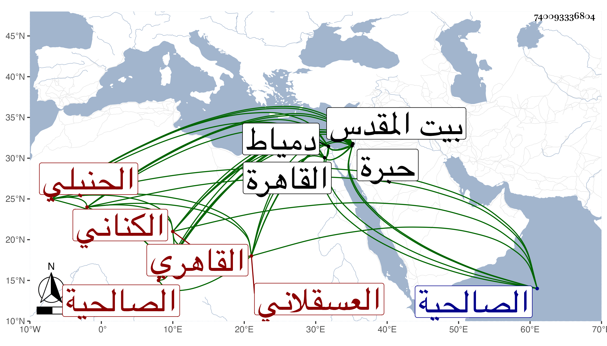

0902Sakhawi.DawLamic.ITO20230111-ara1.EIS1600.740093336804
Biography ID: 740093336804
أحمد بن عبد الله بن علي بن محمد بن علي بن عبد الله بن أبي الفتح بن هاشم ابن إسماعيل بن نصر الله بن أحمد الشهاب بن الجمال بن العلائي الكناني العسقلاني الأصل القاهري الحنبلي الآتي أبوه وكان يعرف بابن الجندي . ولد في أواخر سنة ثمانمائة أو في التي بعدها بالقاهرة ونشأ بها فحفظ القرآن والتسهيل في الفقه وسمع على والده فأكثر وعلى الشهاب الطريني وابن الكويك وصالحة التركمانية في آخرين ، وأجاز له الزين المراغي والجمال بن ظهيرة وطائفة كعائشة ابنة ابن عبد الهادي ، وحج وسافر إلى دمياط وزار القدس والخليل وارتزق مدة بالسمسرة في الكتب وتقدم من أهلها لمعرفته بل لأصله ثم تركها بعد ولاية ابن عمه العز قضاء الحنابلة وجلس مع الحنابلة بباب الصالحية فتكسب بالشهادة مع جهات باسمه كالتصوف بالأشرفية ، وحدث باليسير سمع منه الفضلاء أخذت عنه ، ومات بعد أن ورث العز وغيره وكونه لم يحصل على طائل في ليلة الثامن من شوال سنة إحدى وثمانين وصلى عليه من الغد ثم دفن رحمه الله وعفا عنه .
